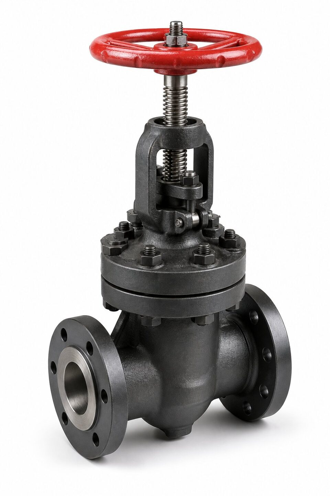

جایگاه مرجع ساخت
این مرجع، الزامات ساخت شیرهای دروازهای فولادی با بونت پیچی را برای صنایع نفت و گاز تعریف میکند: بدنه، بونت، ساقه، گوه، تریم، پیچهای بدنه و روشهای تست. وقتی در مشخصه پروژه ذکر میشود که شیر دروازهای باید مطابق این مرجع باشد، سازنده باید همه این الزامات را رعایت و در مدارک اثبات کند.

الزامات کلیدی ساخت
- ساقه رو (بیرونی) با رزوه خارج از مسیر سیال برای عمر و ایمنی بیشتر.
- گوه صلب یا منعطف متناسب با طراحی سازنده.
- حداقل ضخامت بدنه منطبق با مرجع طراحی شیرآلات.
- متریال تریم از جداول تریم تعریفشده.
- بونت پیچی قابل باز شدن برای تعمیر و بازرسی.
- بازرسی و تست مطابق مرجع تست شیرآلات.
تریم و سطوح نشیمنگاه
تریم یکی از مهمترین بخشهای سفارش است. در سرویسهای ساینده یا با سیکل کاری بالا، سطوح نشیمنگاه با پوششهای سخت افزایش عمر پیدا میکنند. در سرویسهای خورنده، متریال تریم باید با سیال سازگار باشد. کد تریم در سفارش باید صریح ذکر شود تا از انتخاب پیشفرض سازنده جلوگیری گردد.
خلاصه الزامات برای استعلام
| مورد | الزام رایج |
|---|---|
| ساخت بدنه | فولاد ریختگی یا فورج متناسب با کلاس |
| ساقه | رو، بیرونی، از جنس تریم |
| بونت | پیچی، قابل باز شدن |
| تریم | طبق کد تریم سفارش |
| تست | بدنه و نشیمنگاه مطابق مرجع تست |
| مدارک | گواهی مواد و گزارش تست |
نکات خرید و بازرسی
- سایز و کلاس فشاری را با دمای سرویس ذکر کنید.
- کد تریم را صریح بنویسید.
- الزامات بازرسی و تست را مشخص کنید.
- حک بدنه و مدارک را در تحویل کنترل کنید.
- در سرویسهای خاص، الزامات تکمیلی را اضافه کنید.
مقایسه با مراجع همخانواده
| مرجع | دامنه |
|---|---|
| مرجع شیر دروازهای فولادی بونت پیچی | سایزهای متوسط و بزرگ فرایندی |
| مرجع شیر سایز کوچک فورج | سایزهای کوچک پرفشار |
| مرجع شیرهای خط انتقال | خطوط انتقال پیگرو |
| مرجع عمومی طراحی شیرآلات | مبانی کلاس فشاری برای همه |
نکات بازرسی تحویل
- کنترل حک بدنه شامل متریال، کلاس و سایز.
- بازرسی چشمی سطوح آببندی و گوه.
- کنترل عملکرد باز و بسته کامل.
- تطابق گواهی مواد با شماره ذوب بدنه.
- بررسی پوشش حفاظتی و بستهبندی حمل.
جمعبندی
استناد به مرجع ساخت معتبر، زبان مشترک خریدار و سازنده است. با استعلام دقیق و کنترل مدارک، شیر دروازهای منطبق و قابل دفاع دریافت کنید.
سوالات رایج
این استاندارد برای چه شیرهایی کاربرد دارد؟
برای شیرهای دروازهای فولادی با بونت پیچی، ساقه رو و گوه که عمدتاً در صنایع نفت، گاز و پتروشیمی استفاده میشوند. شیرهای فورج سایز کوچک یا شیرهای خط انتقال، مراجع جداگانه خود را دارند.
تریم شیر چیست و چرا مهم است؟
تریم به اجزای داخلی درگیر با جریان مانند دیسک، نشیمنگاه و ساقه گفته میشود. متریال تریم مستقیماً عمر شیر در سرویس ساینده یا خورنده را تعیین میکند و باید در سفارش صریح انتخاب شود.
تست این شیرها بر چه اساسی انجام میشود؟
تست بدنه و نشیمنگاه بر اساس مرجع تست شیرآلات انجام و معیارهای پذیرش نشتی مشخص میشود. گزارش تست بخشی از مدارک تحویل است.
در استعلام چه مواردی الزامی است؟
سایز، کلاس فشاری، متریال بدنه، کد تریم، وضعیت ساقه و الزامات تست. نبود هر یک از این موارد میتواند به پیشنهاد ناقص یا نامنطبق منجر شود.
مطالب مرتبط
- راهنمای جامع شیر دروازهای
- مرجع طراحی شیرآلات (ASME B16.34)
- راهنمای شیر دروازهای (API 600) — طراحی و تست
- استاندارد شیر دروازهای سایز کوچک (API 602)
- راهنمای تست و معیارهای نشتی شیرآلات
با ذکر سایز، کلاس فشاری، متریال بدنه و کد تریم، شیر منطبق با مرجع ساخت به همراه مدارک تست عرضه میشود.
مشاهده صفحه محصول ← ثبت RFQ همین محصولتامین این تجهیزات را به پیشرو تجهیز فرتاک بسپارید
شرکت پیشرو تجهیز فرتاک تامینکننده تخصصی تجهیزات صنعتی برای پروژههای نفت، گاز، پتروشیمی، فولاد و نیروگاهی است. برای دریافت پیشنهاد فنی و قیمت، استعلام (RFQ) خود را ثبت کنید تا کارشناسان مهندسی فروش در کوتاهترین زمان پاسخ دهند.
- تامین شیرآلات صنعتیخانواده کامل شیر با گواهی مواد و تست
- تامین تجهیزات صنایع نفت و گازپکیج مواد مطابق وندورلیست